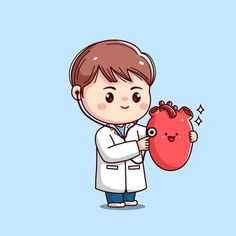
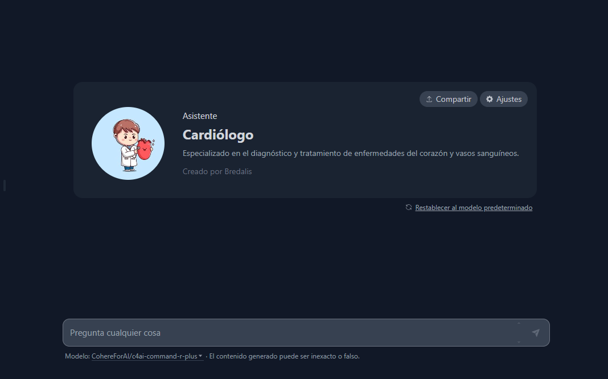

✨ Cardiología ✨
01. Definición de Cardiología
La cardiología es la rama de la medicina especializada en el diagnóstico, tratamiento y prevención de enfermedades del corazón y del sistema cardiovascular. Los cardiólogos son médicos expertos en evaluar la salud del corazón, desde problemas simples hasta enfermedades complejas que afectan su funcionamiento.
02. Tipos de Cardiología
Cardiología Clínica: Se centra en el diagnóstico y tratamiento de enfermedades cardiovasculares mediante el uso de herramientas como electrocardiogramas (ECG), ecocardiografías y pruebas de esfuerzo. Los cardiólogos clínicos manejan condiciones como la hipertensión arterial, la insuficiencia cardíaca y las arritmias.
Cardiología Intervencionista: Utiliza procedimientos mínimamente invasivos para tratar enfermedades cardiovasculares, como la angioplastia coronaria y la colocación de stents para abrir arterias bloqueadas. Los cardiólogos intervencionistas son especialistas en técnicas que restauran el flujo sanguíneo al corazón.
Electrofisiología Cardíaca: Se enfoca en el estudio y tratamiento de las arritmias cardíacas, que son alteraciones en el ritmo eléctrico del corazón. Los electrofisiólogos cardíacos utilizan estudios electrofisiológicos para diagnosticar y técnicas como la ablación por catéter para corregir ritmos anormales.
Cardiología Preventiva: Se concentra en la prevención de enfermedades cardiovasculares a través de la educación, cambios en el estilo de vida y el tratamiento temprano de factores de riesgo como la hipertensión, el colesterol alto y la diabetes. Los cardiólogos preventivos promueven hábitos saludables y estrategias de manejo del riesgo cardiovascular.
03. Descripcion del Especialista
Esta especializados en el diagnóstico y tratamiento de enfermedades del corazón y los vasos sanguíneos, incluyendo la prevención de enfermedades cardiovasculares y el manejo de condiciones crónicas como la hipertensión y la insuficiencia cardíaca.